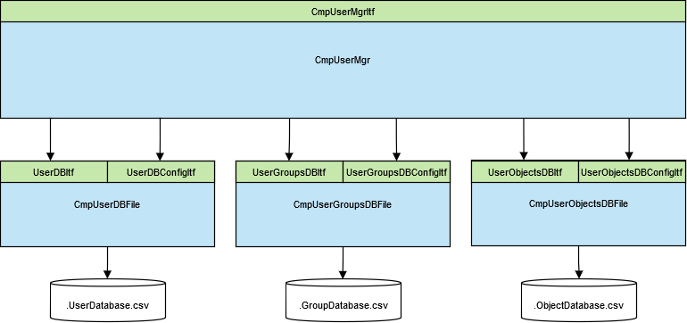

5.3.15. Device User Management¶
In the runtime system, you can use a simple or a usergroup based user management. With this user management all access to the runtime system can be resticted and protected.
The so called device user management stores and manages two different kind of elements:
In the users and groups area you can create users, define a password and assign the user to a user group
For details see the Online Help of CODESYS in the chapter: | Editors > Device Editors > Generic Device Editor > Users and Groups
The second kind of elements stores all objects of the runtime system, on which access rights should be managed.
Here you can assign to each group and to each object the appropriate access rights For details see the Online Help of CODESYS in the chapter: | Editors > Device Editors > Generic Device Editor > Access Rights
To enable the editors to configure both parts on the runtime system you have to enable the corresponding device editor page in your device description:
<DeviceDescription
xmlns="http://www.3s-software.com/schemas/DeviceDescription-1.0.xsd">
<Device>
<Connector moduleType="256" interface="Common.PCI" role="parent" explicit="false">
<Appearance>
<ShowEditor>UserManagementPage</ShowEditor>
</Appearance>
</Connector>
</Device>
</DeviceDescription>
The device user management is an optional feature of the runtime system. For details see the feature description user manager.
The user management is implemented using two layer of components:
CmpUserMgr:
This component implements the interface CmpUserMgrItf and is the component used by other runtime components. This component provides access to the taks:
Add and remove objects where user rights can be checked.
Authenticate users.
Grand or deny access to objects.
Backends:
The provider the needed functionality
CmpUserDBFile:
This back end implements a user database that supports user name / password credentials and stores the database within the file system. For a secure storage of the user passwords this components uses scrypt to generate the password hashes. The database file is not compatible with the existing user database. However, the component imports an existing user database on start-up and converts the hashes into scrypt hashes.
The name of database file is: “.UserDatabase.csv”
This component relies on implementations of SysFileItf and CmpCryptoItf. The component allows full configuration of users and implements the CmpUserDBItf and CmpUserDBConfigurationItf.
CmpUserGroupsDBFile:
This back end implements a user group database and stores the database within the file system.
The name of database file is: “.GroupDatabase.csv”
This component relies on implementations of SysFileItf. The component allows full configuration of user groups and user to group association and implements the CmpUserGroupsDBItf and CMpUserGroupsDBConfigurationItf.
CmpUserObjectsDBFile:
This back end implements a full object database and allows full configuration of the access rights to the different objects. This component stores the configuration into the file system.
The name of database file is: “.UserObjectsDatabase.csv” (note: currently it is named as “.UserMgmtRightsDB.csv”)
This component relies on implementations of SysFileItf and implements itself the CmpUserObjectsDBItf and CmpUserObjectsDBConfigurationItf.
Note
All user management database files cannot be accessed via filetransfer. See tutorial file path and placeholders for details.
Note
For embedded controllers there is an alternate component wich implements both interfaces above. It can be used as atemplate to specify users, groups and rights during compile time. See CmpUserEmbedded as a template! You have to adapt this to your specific implementation.
If the user manager is present in the runtime system, it is prepared and can be configured in CODESYS. In the online help of CODESYS there is a detailed description how setup and configure the device user management.